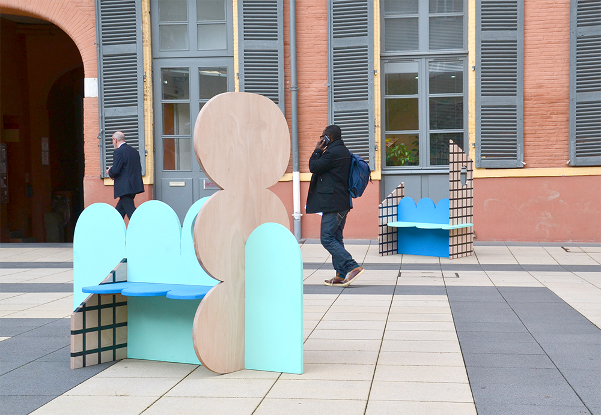
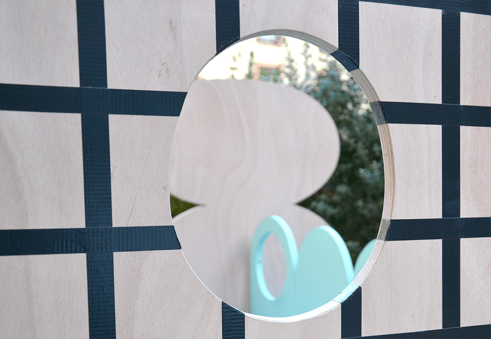
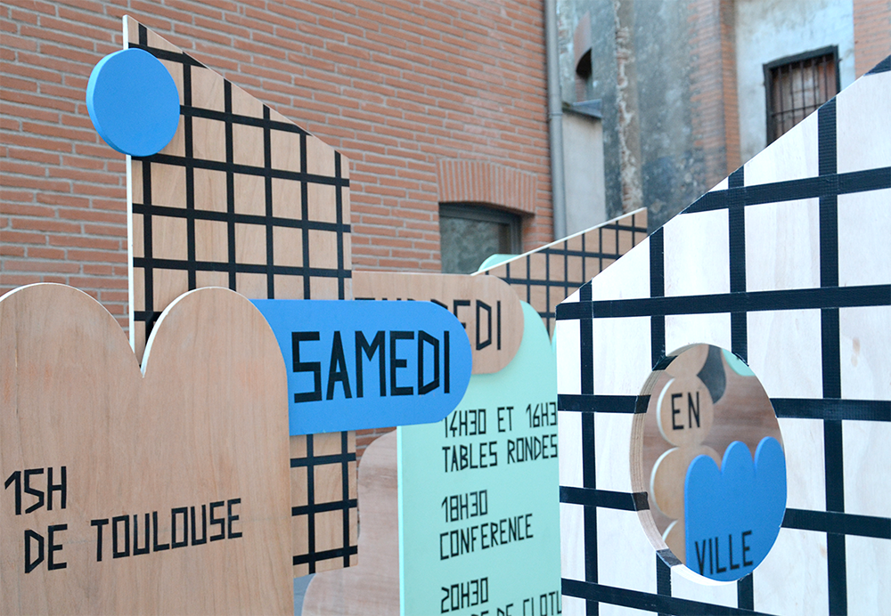
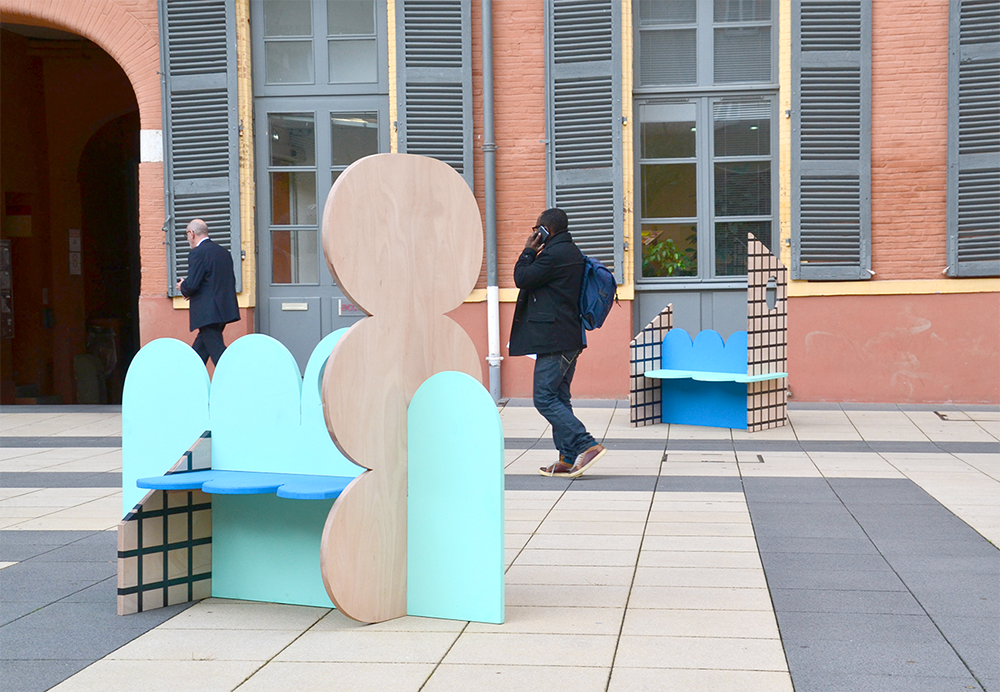
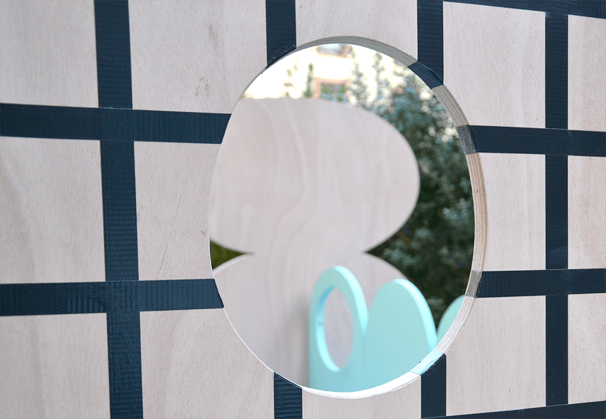
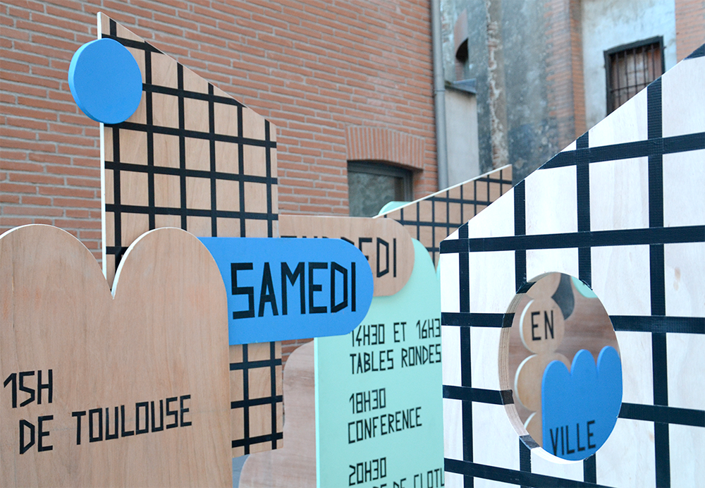

la Ville en Jeux
Scénographie de la biennale organisée par la Ville en Jeux,
dédiée cette année, aux enjeux de la nature en ville.
Par soucis de réemploi, la typographie était inscrite
au ruban adhésif et le mobilier était assemblé
par des encoches à mi-bois, afin d’optimiser
les matériaux une fois la biennale terminée.
Scénographie réalisée avec Francesca Damonte, architecte et Antoine Leduc, designer ébéniste,
en novembre 2019.


 




